サプリメンタルコンテンツ
「サプリメンタルコンテンツ」タブをクリックするとサプリメンタルコンテンツ用ワークフロー画面が表示されます。
自身が登録したサプリメンタルコンテンツを閲覧することができます。
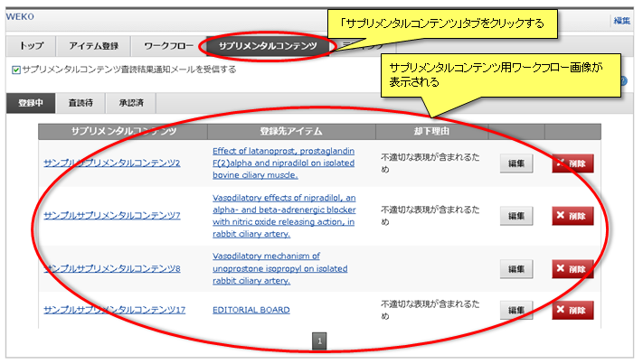
自身が登録したサプリメンタルコンテンツを閲覧することができます。
サプリメンタルコンテンツ査読通知メール受信設定
サプリメンタルコンテンツの査読通知メールの受信設定を変更することができます。
「査読結果通知メールを受信する」にチェックを入れると、自身が登録および編集をしたサプリメンタルコンテンツの査読結果がメールで通知されます。
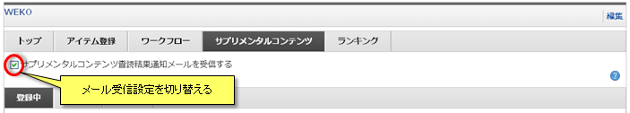
【注意事項】
「査読結果通知メールを受信する」にチェックを入れると、自身が登録および編集をしたサプリメンタルコンテンツの査読結果がメールで通知されます。
【注意事項】
- サプリメンタルコンテンツ査読通知メールは会員情報設定画面でメールアドレスを設定している場合のみ有効となります。
登録サプリコンテンツ閲覧
登録中
「登録中」タブをクリックすると、自身が登録したサプリメンタルコンテンツのうち、査読で却下されたサプリメンタルコンテンツが表示されます。
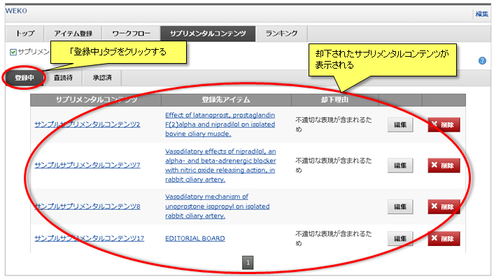
表示されたサプリメンタルコンテンツの詳細閲覧方法などの操作については共通操作をご覧ください。
表示されたサプリメンタルコンテンツの詳細閲覧方法などの操作については共通操作をご覧ください。
査読待
「査読待」タブをクリックすると、自身が登録したサプリメンタルコンテンツのうち、管理者の査読待のサプリメンタルコンテンツが表示されます。
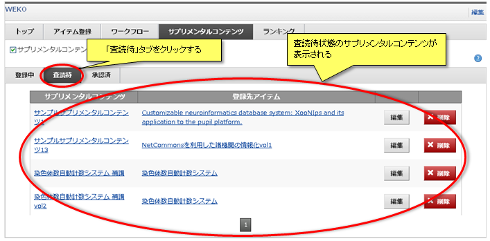
表示されたサプリメンタルコンテンツの詳細閲覧方法などの操作については共通操作をご覧ください。
表示されたサプリメンタルコンテンツの詳細閲覧方法などの操作については共通操作をご覧ください。
承認済
「承認済」タブをクリックすると、自身が登録したサプリメンタルコンテンツのうち、管理者の承認済のサプリメンタルコンテンツが表示されます。
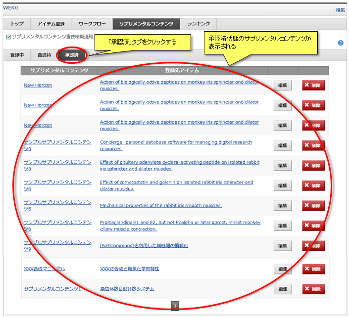
表示されたサプリメンタルコンテンツの詳細閲覧方法などの操作については共通操作をご覧ください。
表示されたサプリメンタルコンテンツの詳細閲覧方法などの操作については共通操作をご覧ください。
共通操作
■サプリメンタルコンテンツ詳細情報の閲覧
■サプリメンタルコンテンツの削除
サプリメンタルコンテンツのタイトルをクリックすると別ウインドウが開き、本体コンテンツのアイテム詳細画面が表示されます。
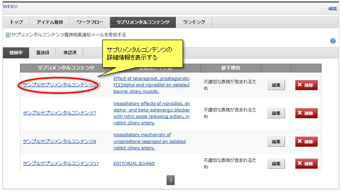
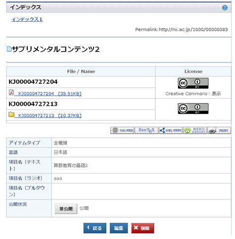
■登録先アイテム詳細情報の閲覧
登録先アイテムのタイトルをクリックすると、アイテムの詳細情報がポップアップで表示されます。
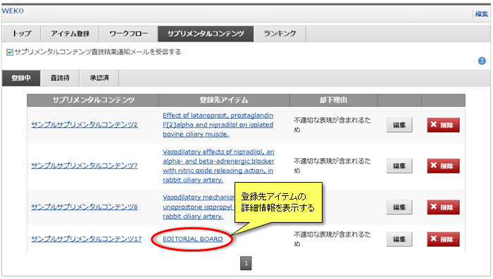
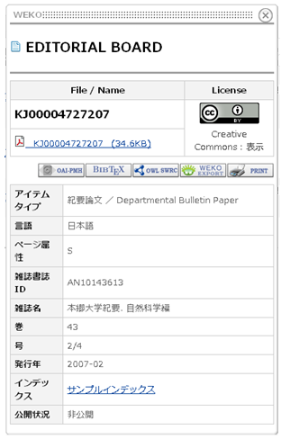
■サプリメンタルコンテンツの編集■サプリメンタルコンテンツの削除
「削除」ボタンをクリックすると、サプリメンタルコンテンツの削除方法を選択するポップアップが表示されます。
「リンク削除」ボタンをクリックすると、登録されているコンテンツ本体へのリンクのみを削除することができます。
「本体およびリンク削除」ボタンをクリックすると、、登録されているコンテンツ本体へのリンクが削除することができます。
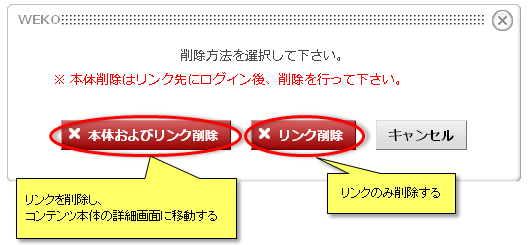
「本体およびリンク削除」ボタンをクリックした場合、別ウインドウが開き、サプリメンタルコンテンツ本体の詳細画面が表示されます。
「削除」ボタンをクリックし、確認ポップアップで「OK」ボタンをクリックすると、本体コンテンツを削除することができます。
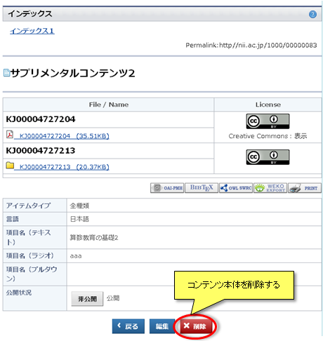
【注意事項】
■ページ移動「リンク削除」ボタンをクリックすると、登録されているコンテンツ本体へのリンクのみを削除することができます。
「本体およびリンク削除」ボタンをクリックすると、、登録されているコンテンツ本体へのリンクが削除することができます。
「本体およびリンク削除」ボタンをクリックした場合、別ウインドウが開き、サプリメンタルコンテンツ本体の詳細画面が表示されます。
「削除」ボタンをクリックし、確認ポップアップで「OK」ボタンをクリックすると、本体コンテンツを削除することができます。
【注意事項】
- 本体コンテンツを削除するには別途サプリメンタルWEKOにログインする必要があります。
サプリメンタルコンテンツは1ページに20件ずつ表示されます。
をクリックすると次ページが表示されます。
をクリックすると前ページが表示されます。
ページ番号をクリックすると指定したページが表示されます。
をクリックすると次ページが表示されます。
をクリックすると前ページが表示されます。
ページ番号をクリックすると指定したページが表示されます。